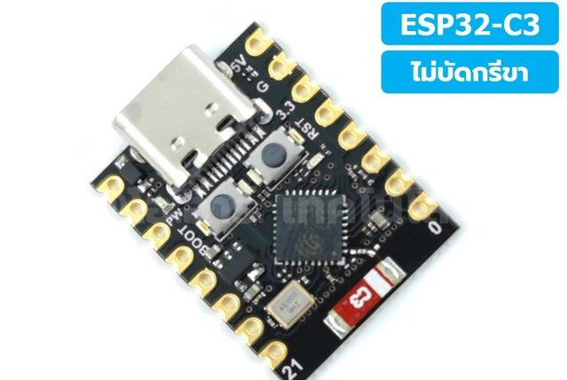
ESP32-C3 Super Mini
สมองของระบบ รันลูปควบคุม 500 Hz · ลอจิก 3.3 V · รับไฟ 5 V
GPIO1–4 มอเตอร์ · GPIO8/9 I²Cโครงตัว U ที่ทรงตัวบนขอบฐานด้วยล้อเหวี่ยง 20 cm — เร่งหรือชะลอล้อเพื่อสร้างแรงบิดปฏิกิริยาดันโครงกลับสู่แนวตั้ง อ่านมุมจาก IMU แล้วคำนวณคำสั่งมอเตอร์ที่ 500 Hz
compile ผ่านทั้ง 3 sketch (ใช้ flash 27%) ตรวจโค้ดและแก้ครบแล้ว
ฟื้นจากเอียง 5° ได้ 19/20 รอบ ในแบบจำลองที่มี noise และ delay
ต้องวัดขั้วสัญญาณมอเตอร์ แกน IMU อัตราทด และมวลจริงก่อน
ลุกขึ้นเองจากท่านอนทำไม่ได้กับมอเตอร์ตัวนี้ — เบรกหยุดล้อได้ช้าเกินไป (ต้องการ 190–770 rad/s² แต่มอเตอร์ทำได้ราว 78 rad/s²) ต้องประคองให้ตั้งตรงก่อน แล้วระบบจะทรงตัวต่อเอง

สมองของระบบ รันลูปควบคุม 500 Hz · ลอจิก 3.3 V · รับไฟ 5 V
GPIO1–4 มอเตอร์ · GPIO8/9 I²C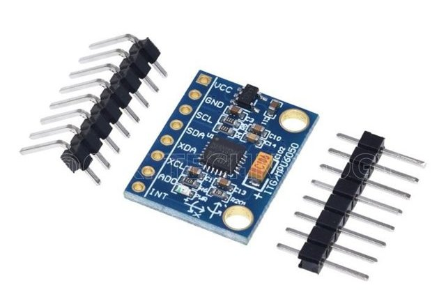
accelerometer + gyroscope 3 แกน ใช้วัดมุมเอียงและอัตราเอียง · ตั้ง ±4 g / ±500 °/s
SDA→8 · SCL→9 · INT→10 · addr 0x68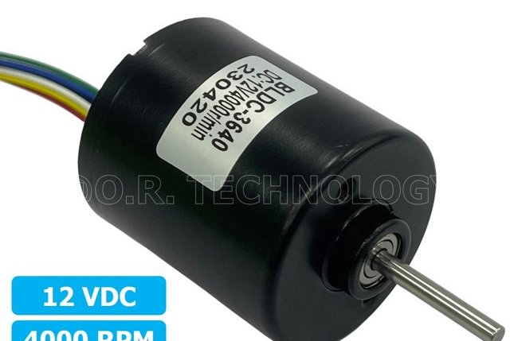
มอเตอร์ไร้แปรงถ่าน 12 VDC 4000 rpm มีไดรเวอร์ในตัว สาย 6 เส้น ขับล้อผ่านเฟือง
PWM→1 · F/R→2 · BRAKE→3 · FG→4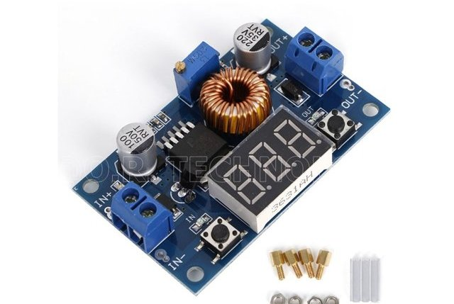
XL4015 · รับ 4–38 V ออก 1.25–36 V 5 A มีจอโวลต์ · ตั้งให้ได้ 5.0 V ก่อนต่อบอร์ด
IN 12 V → OUT 5 V → ESP32 5V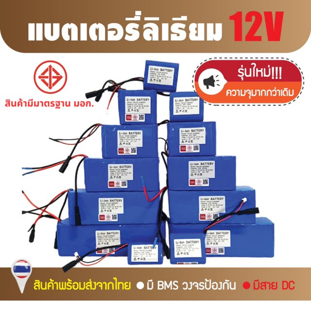
แพ็ค 18650 แบบ 3S มี BMS + ที่ชาร์จ 1 A · ห้ามใช้จนแรงดันต่ำกว่า 9 V
+12 V → สวิตช์ → ฟิวส์ 3 Aรูปจากหน้าร้านที่สั่งซื้อตามไฟล์ raction module.xlsx (ร้าน โอ.อาร์. เทคโนโลยี และ Shopee) — รูป ESP32 และแบตในสไลด์เดิมไม่ตรงรุ่นที่ใช้จริง (สไลด์เป็นบอร์ด DevKit และแบต 24 V)
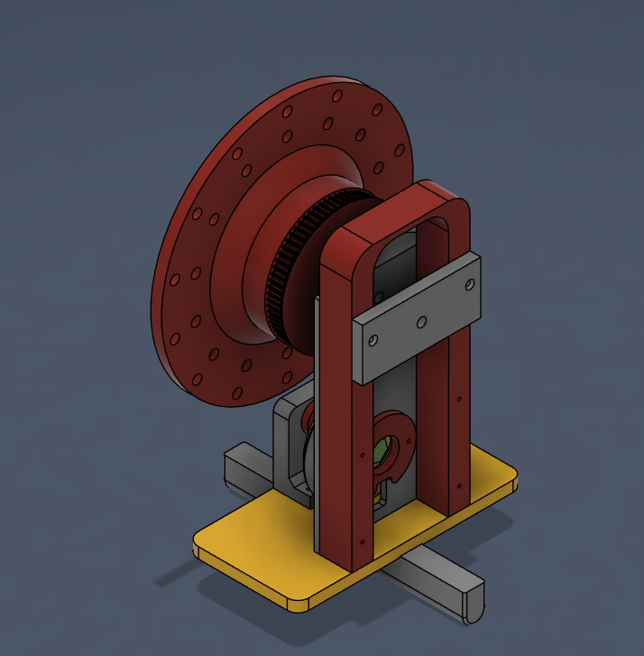
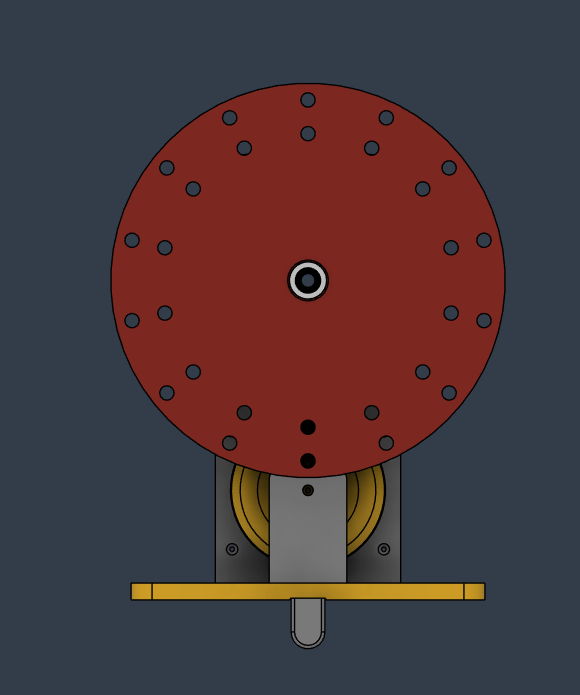
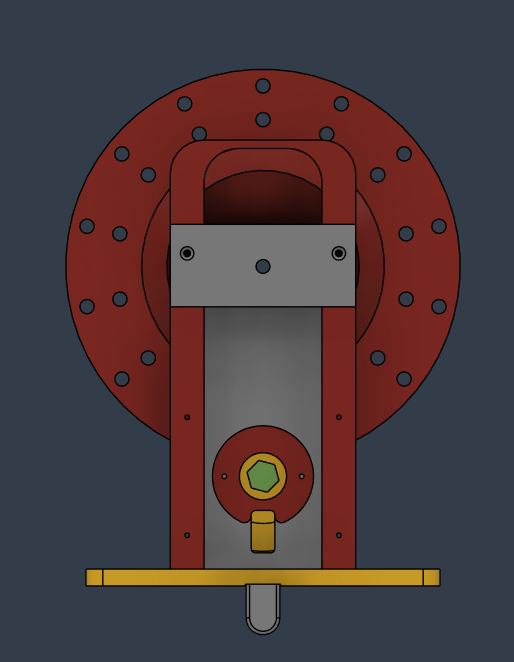
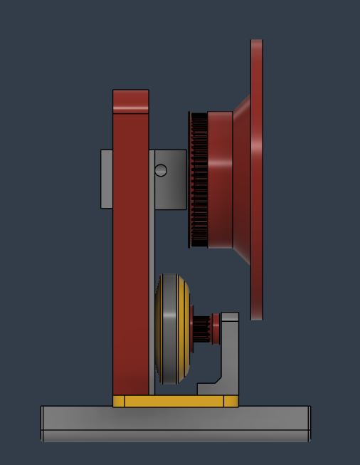
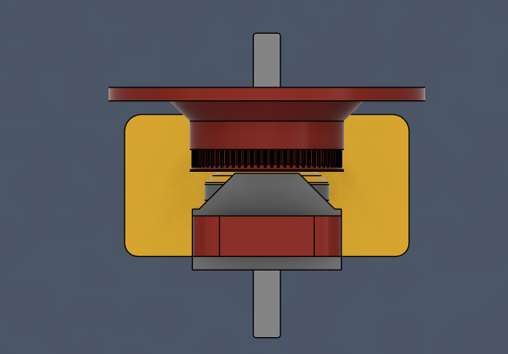
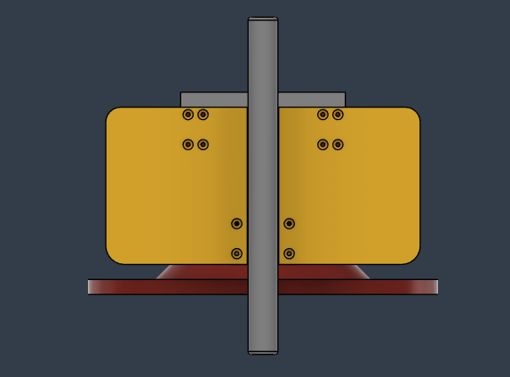
แรงบิดที่ดันโครงมาจาก ความเร่งของล้อ ไม่ใช่ความเร็วของล้อ ส่วนไดรเวอร์ในตัวมอเตอร์รับค่าเป็นคำสั่งความเร็ว เฟิร์มแวร์จึงคำนวณความเร่งที่ต้องการก่อน แล้วค่อยสะสมเป็นคำสั่งความเร็ว — การแปลงมุมเป็น PWM ตรง ๆ แบบ PID ทั่วไปจะทรงตัวไม่ได้
เทอม Kw·ω ดึงความเร็วล้อไม่ให้ไหลขึ้นไปจนเต็มรอบ ส่วนทิศการหมุนของล้อประมาณจากโมเดลหน่วงเวลาของมอเตอร์ เพราะสัญญาณ FG บอกได้แค่ขนาดความเร็ว ไม่บอกทิศ
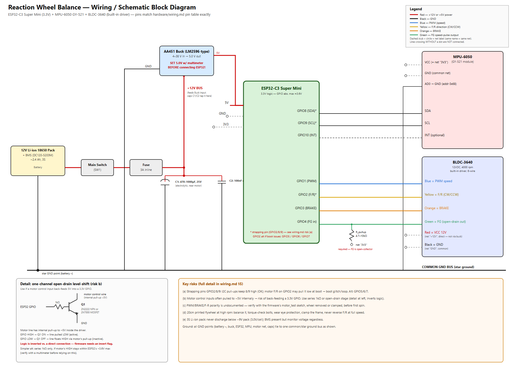
hardware/schematic.svg · รายละเอียดเต็มใน hardware/wiring.md| สัญญาณ | ESP32-C3 | สาย / ขา | หมายเหตุ |
|---|---|---|---|
| I²C SDA | GPIO8 | MPU SDA | ขาบูต — pull-up บนโมดูลช่วยให้บูตปกติ |
| I²C SCL | GPIO9 | MPU SCL | ขา BOOT — ห้ามดึงลง GND ตอนเปิดเครื่อง |
| IMU INT | GPIO10 | MPU INT | ไม่บังคับ |
| ความเร็วมอเตอร์ | GPIO1 | น้ำเงิน · PWM | 20 kHz · 10-bit |
| ทิศทาง | GPIO2 | เหลือง · F/R | ขาบูต ถ้าบอร์ดบูตไม่ขึ้น ย้ายไป GPIO5/6/7 |
| เบรก | GPIO3 | ส้ม · BRAKE | ขั้วสัญญาณต้องหาด้วย motor_test |
| ความเร็วล้อ | GPIO4 | เขียว · FG | ต้องมี pull-up 4.7–10 kΩ ไป 3V3 |
| ไฟมอเตอร์ | — | แดง / ดำ | 12 V ตรงจากแบต ผ่านสวิตช์ + ฟิวส์ 3 A · C 470–1000 µF ใกล้มอเตอร์ |
| ไฟบอร์ด | 5V | Buck AA451 | ตั้งให้ได้ 5.0 V ด้วยมัลติมิเตอร์ ก่อนต่อ ESP32 · GND ทุกจุดต่อรวมกัน |
ตั้ง buck ให้ได้ 5.0 V ก่อน · เช็คขั้วแบต · ใส่ pull-up ที่ FG · วัดแรงดันที่ขาควบคุมมอเตอร์ ถ้าเกิน 3.6 V ให้ใส่ R 1 kΩ หรือทรานซิสเตอร์คั่น
imu_testเอียงโครงด้วยมือตามแกนที่ต้องทรงตัว ดูว่าคอลัมน์ไหนเปลี่ยนตาม แล้วตั้ง IMU_ACCEL_AXIS_* / IMU_GYRO_* ใน config.h
motor_test โดยถอดล้อหรือยึดให้แน่นหา PWM_INVERT, DIR_CW_LEVEL, BRAKE_ACTIVE_LEVEL · หมุนแกนมอเตอร์ 1 รอบเพื่อนับจำนวนพัลส์ FG · รัน coastdown เพื่อดูว่าต้องเปิด ACTIVE_DECEL_BRAKE หรือไม่
มวลโครงและล้อ ความสูงจุดศูนย์ถ่วง ความเฉื่อยล้อ (จาก Fusion Properties) อัตราทด แล้วรัน py -X utf8 sim/design_gains.py --set m_b=… l_b=… --quick และวางบรรทัด #define ที่ได้ลง config.h
zero · เช็คทิศแรงบิดด้วยมือถือโครงให้แน่นจนสถานะเป็น BALANCING แล้วเอียงเล็กน้อย ล้อต้องดันกลับเข้าแนวตั้ง ถ้าดันไปทางที่เอียงให้พิมพ์ sign -1
tel 1 เก็บ CSV · ปรับละเอียด · saveห้ามจูนแบบเริ่มจาก Kp = 0 — ถ้า Kp ต่ำกว่าค่าขั้นต่ำ ≈ m·g·l / I_w ล้อจะชนะแรงโน้มถ่วงไม่ได้เลย · ค่าที่ save ลง NVS จะทับค่าใน config.h ทุกครั้งที่บูต
ออกแบบด้วย LQR ที่ค่าประมาณการ: โครง 0.7 kg · COM สูง 0.11 m · ล้อ 0.35 kg · แกนล้อสูง 0.14 m · ทด 2.5 : 1 · tau_m 0.06 s — เกนทุกตัวเครื่องหมายเดียวกัน และต้องคำนวณใหม่เมื่อรู้ค่าจริง
| ตัวแปรที่เปลี่ยน | ค่า | แรงบิดล้อ / แรงโน้มถ่วง | อัตราสำเร็จ |
|---|---|---|---|
| อัตราทด มอเตอร์ : ล้อ | 1.0 | 0.71× | |
| 1.5 | 1.07× | ||
| 2.0 | 1.42× | ||
| 3.0 | 2.13× | ||
| แรงบิดสตอลล์มอเตอร์ | 0.06 N·m | 1.18× | |
| 0.08 N·m | 1.58× | ||
| 0.10 N·m | 1.97× | ||
| เวลาตอบสนองมอเตอร์ tau_m | 0.04 s | 1.78× | |
| 0.06 s | 1.78× | ||
| 0.08 s | 1.78× | ||
| 0.10 s | 1.78× |
กฎจำง่าย: แรงบิดที่ล้อต้องได้ ≥ 1.5 เท่าของแรงโน้มถ่วงที่มุมเอียงสูงสุด → อัตราทด ≥ 3 : 1 · มอเตอร์ตอบสนองภายใน 0.08 s · ฟื้นจาก 10° ไม่ได้ด้วยมอเตอร์ตัวนี้ (อยู่นอกขอบเขต 5° อยู่แล้ว) · ข้อมูลเต็มใน sim/out/hardware_requirements.csv
PWM อาจกลับขั้ว (duty 0 = เร็วสุด) เบรกอาจ active-low และจำนวนพัลส์ FG ต่อรอบยังไม่รู้ ต้องหาด้วย motor_test ก่อนติดตั้งล้อ
ไดรเวอร์ราคาถูกมักทำได้แค่ปล่อยไหลเมื่อลด PWM ทำให้แรงบิดสองทิศไม่เท่ากัน ถ้าผล coast-down ช้า ให้เปิด ACTIVE_DECEL_BRAKE
ขาควบคุมของมอเตอร์อาจมี pull-up ภายในไป 5 V ซึ่งเกินพิกัด 3.6 V ของ ESP32 วัดก่อนต่อ ถ้าใช่ให้คั่นด้วย R 1 kΩ หรือทรานซิสเตอร์ open-drain
ล้อ 20 cm ที่ 1,300+ rpm ต้องถ่วงให้สมดุลและขันน็อตแน่น · สวมแว่นตา · ยึดโครงตอนทดสอบครั้งแรก · แบต 3S ห้ามต่ำกว่า 9 V
| รายการ | หน้าที่ | ราคา (บาท) |
|---|---|---|
| BLDC-3640 · 12 V 4000 rpm | ขับล้อเหวี่ยง มีไดรเวอร์ในตัว | 520.00 |
| DC120-5203M + ที่ชาร์จ 1 A | แบต Li-ion 12 V มี BMS | 535.00 |
| AA451 step-down | ลดไฟเป็น 5 V ให้บอร์ด | 95.00 |
| MPU-6050 (GY-521) | วัดมุมเอียง | 90.00 |
| ESP32-C3 Super Mini | ประมวลผลลูปควบคุม | 120.00 |
| งานพิมพ์ 3D | ล้อเหวี่ยง + โครง | 4,108.80 |
| รวม | 5,468.80 |
งบตั้งต้น 10,000 บาท · ใช้ไปแล้ว 2,734.50 บาท · คงเหลือ 7,265.50 บาท ตามชีต 2 (ไม่ตรงกับยอดรวมตารางด้านบน ควรเช็คต้นฉบับ) · อุปกรณ์ที่ต้องซื้อเพิ่ม: สวิตช์, ฟิวส์ 3 A, ตัวเก็บประจุ 470–1000 µF, R 4.7–10 kΩ
wiring.md ตารางขา ลำดับต่อสาย checklist · schematic.svg / .png
reaction_wheel_balance/ โค้ดหลัก · imu_test/ · motor_test/ · README.md คำสั่ง serial
design_gains.py คำนวณเกน · hardware_requirements.py · run_demo.py กราฟ · README.md